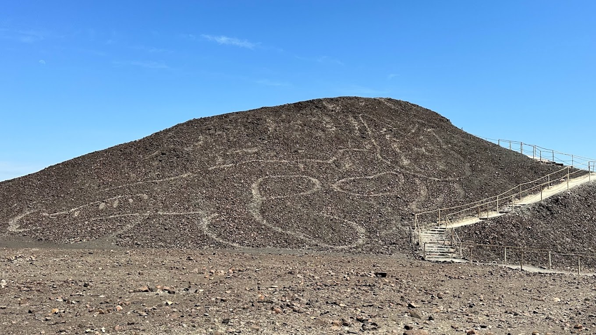
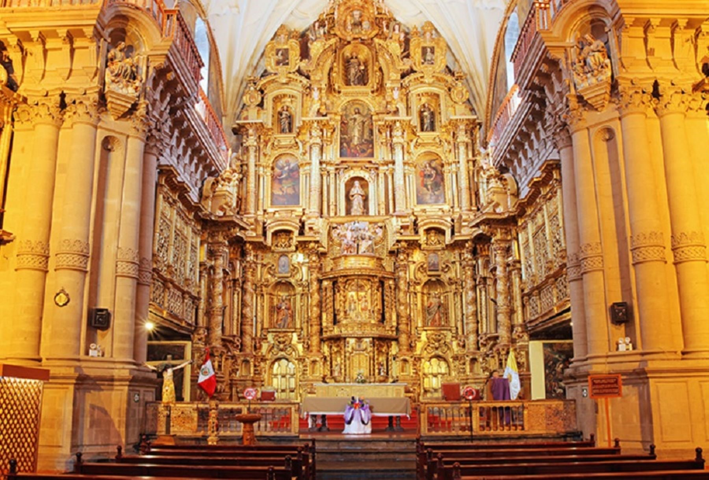
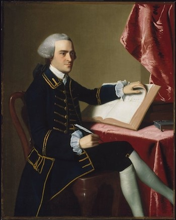
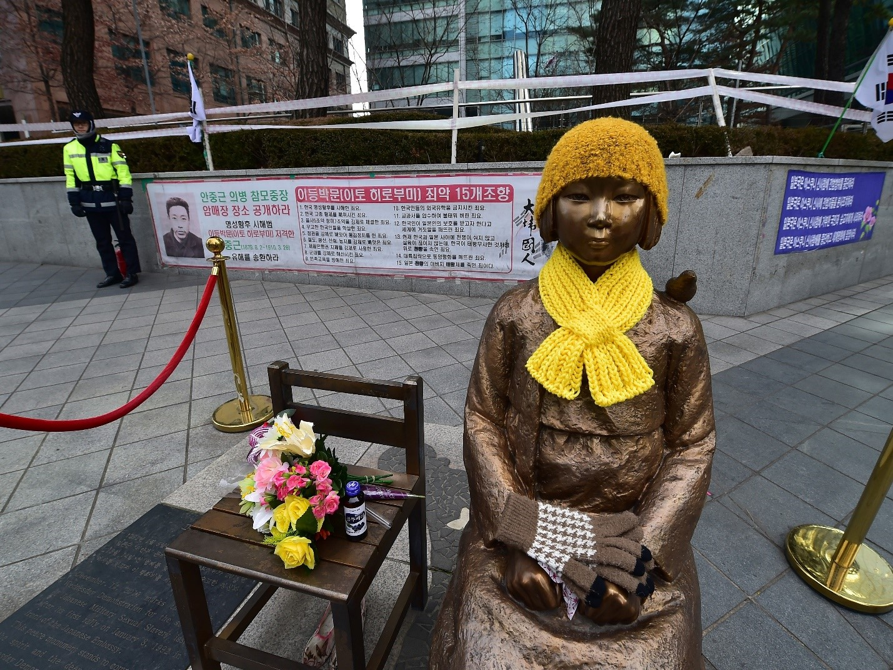
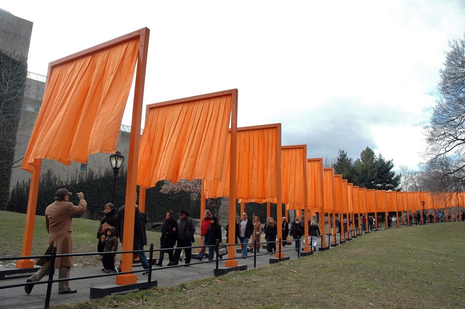

Pre-Colonial Visual Art
Unraveling the Mysteries of the Nazca Lines: Ancient Marvels of Peru
The Nazca Lines etched into the arid expanse of the Nazca Desert in southern Peru, stand as one of the most captivating and enigmatic creations of pre-colonial civilizations. These massive geoglyphs, dating back to between 200 BCE and 600 CE, have stirred the imagination of researchers and explorers for decades, prompting a quest to unravel the mysteries beneath their intricate designs.
The Nazca Lines: Aerial Marvels:
Stretching across the Nazca Plateau, the Nazca Lines are a series of geoglyphs, giant figures, and lines etched into the desert floor. The statistics include animals such as hummingbirds, monkeys, spiders, and whales, alongside intricate geometric shapes and humanoid figures. Their enormous scale sets these creations apart; some figures span several hundred feet, and their true grandeur is revealed only when viewed from above.
The Precision of Ancient Artistry:
The precision in crafting these massive geoglyphs raises questions about the Nazca people's technological capabilities. Without the aid of modern technology, how did they achieve such accuracy and scale? Theories abound, ranging from simple tools and meticulous planning to the possibility of early hot air balloons or kites aiding their creation.
The Purpose of the Lines:
One of the enduring mysteries surrounding the Nazca Lines is their purpose. Why did the Nazca people go to such lengths to create these intricate designs, especially when their full beauty could only be appreciated from the air? Various theories have emerged, ranging from religious and ceremonial significance to practical uses like water management or celestial navigation.
Unlocking Cultural Significance:
Exploring the Nazca Lines provides a unique window into the cultural and spiritual practices of the Nazca civilization. The choice of symbols, the alignment of the figures with celestial events, and the meticulous planning required all suggest a deep cultural significance. Understanding the cultural context enriches our appreciation for the lines as more than just monumental art but as a reflection of the beliefs and practices of an ancient society.
Contemporary Challenges:
Preserving the Nazca Lines has become a modern challenge. The delicate desert environment is susceptible to natural erosion and, unfortunately, to human interference. Issues like illegal land invasions and unregulated tourism threaten the integrity of these ancient wonders. Striking a balance between public interest and conservation efforts is crucial to ensuring the survival of the Nazca Lines for future generations.
Spanish Colonial Regime Visual Art
Retablos: A Fusion of Cultures
The term "retablo" originally referred to a devotional painting placed behind an altar, but during the Spanish Colonial period, it evolved into a distinctive form of three-dimensional altarpiece. These intricate structures were crafted by skilled artisans, often mestizo or indigenous, under the influence of European religious art traditions.
Religious Imagery and Symbolism:
Retablos were primarily used to adorn the interiors of churches, conveying religious narratives to the indigenous population. They typically consisted of multiple painted or sculpted panels arranged tiered. These panels depicted scenes from the life of Christ, the Virgin Mary, saints, and angels, reflecting the Catholic teachings brought by the Spanish.
Syncretism in Design:
What makes retablos fascinating is the syncretism embedded in their design. While adhering to European religious themes, indigenous and mestizo artists subtly incorporated elements from their cultural heritage. Traditional indigenous symbols, flora, fauna, and even local customs found their way into the intricate detailing of the retablos. This blending of cultural influences resulted in a unique visual language resonating with Spanish religious authorities and the local population.
Materials and Techniques:
Retablos were crafted using various materials, including wood, gesso, and polychrome paint—these materials allowed for the creation of vibrant and detailed scenes. The retablo's three-dimensional structure, with its multiple layers and niches, added depth and theatricality to the religious narratives, engaging worshippers in a visually immersive experience.
Examples:
- Qorikancha Retablo (Cusco, Peru): The Qorikancha, an Inca temple transformed into a Dominican church, houses a renowned retablo that exemplifies the fusion of indigenous and European influences. It features intricate carvings and gold leaf, showcasing the craftsmanship of the local artisans.
- San Xavier del Bac Retablo (Arizona, USA): The Mission San Xavier del Bac, located in present-day Arizona, features a stunning retablo that reflects the blending of Spanish and Native American artistic traditions. The retablo is adorned with images of saints, angels, and local flora and fauna.
During American Colonial regime
Portrait of Paul Revere (1768) by John Singleton Copley:
Painted in 1768, this iconic portrait by Copley depicts Paul Revere, a silversmith and a key figure in American history, best known for his role in the American Revolution. The picture showcases Revere in his trade attire, holding a silver teapot, emphasizing his craftsmanship and standing in colonial society.
Copley's portrait of Paul Revere is not merely a representation of an individual but a snapshot of colonial life and the evolving political climate. Revere, later celebrated for his midnight ride to warn of British troop movements, is portrayed here as a skilled artisan, embodying the duality of roles many colonial individuals faced during this period.
Artistic Style:
Copley, a renowned American portraitist of the time, employed a style that combined the formality of European portraiture with a distinctive American sensibility. The meticulous attention to detail, use of color, and emphasis on the subject's individuality are characteristic of Copley's approach.
The portrait captures the interplay between Revere's professional identity as a silversmith and his emerging role as a patriot. The teapot in his hand symbolizes his craft and economic standing, while his confident gaze hints at the resolve that would later make him a revolutionary figure.
Legacy:
This portrait of Paul Revere has become an enduring symbol of the American Colonial period. It preserves the likeness of a key historical figure and provides a visual narrative of the complex identities and aspirations of individuals in colonial America.
As an iconic piece of visual art, Copley's "Portrait of Paul Revere" gives a window into the social and political dynamics of the American colonies on the eve of the revolution. Each brush stroke tells a story of craftsmanship, identity, and the seeds of a nascent American spirit.
Japanese Occupation Visual Art
"Comfort Women" Memorial Statue in Seoul, South Korea:
The "Comfort Women" were women and girls who were forced into sexual slavery by the Imperial Japanese Army during World War II. The issue remains a source of historical and diplomatic tension between Japan and its neighboring countries, particularly South Korea. The "Comfort Women" Memorial Statue in Seoul stands as a poignant example of visual art expressing the pain and suffering endured by these women during the Japanese occupation.
The statue features a young girl seated next to an empty chair. The girl is symbolic of the victims, representing the estimated 200,000 women from Korea, China, the Philippines, and other countries who were subjected to sexual slavery. The empty chair signifies the victims who did not survive and serves as a call for remembrance and justice.
Symbolism:
The memorial is a powerful symbol of remembrance, resilience, and a demand for acknowledgment of historical atrocities. The girl's unwavering gaze and the empty chair convey a narrative of loss, suffering, and the lingering impact of wartime sexual violence. The statue aims to raise awareness about the history of "Comfort Women" and advocate for justice and acknowledgment from the Japanese government.
Controversy and Diplomatic Tensions:
The placement of such memorials has been a source of diplomatic tension between South Korea and Japan. The Japanese government's historical stance and reluctance to fully acknowledge and apologize for the wartime atrocities have fueled controversy and contributed to ongoing disputes.
Impact and Awareness:
The "Comfort Women" Memorial Statue in Seoul has become a focal point for activists, survivors, and those advocating for historical justice. It not only serves as a memorial for the victims but also contributes to raising awareness globally about the often-overlooked issue of wartime sexual violence and the importance of acknowledging historical wrongs.
While the "Comfort Women" Memorial Statue is a sad example of visual art born from a dark period of history, it stands as a powerful testament to the resilience of survivors and their ongoing fight for justice, historical truth, and the prevention of such atrocities in the future.
Post War to Contemporary Period Visual Art
"The Gates" (2005) by Christo and Jeanne-Claude:
"The Gates" was a large-scale environmental art installation that temporarily transformed New York City's Central Park. The project was conceived by the artist duo Christo and Jeanne-Claude, known for their ambitious and temporary public art installations worldwide.
"The Gates" consisted of 7,503 gates, each with a width of 16 feet and varying heights, lining the pathways of Central Park. The gates were adorned with free-flowing fabric panels hanging down, creating a visual corridor of vibrant orange throughout the park. The artists carefully selected saffron color for the fabric, creating a warm and striking contrast against the winter landscape.
One of the remarkable aspects of "The Gates" was its interactive nature. Visitors were encouraged to walk through the park and experience the installation up close. The flowing fabric panels responded to the movement of people and the wind, creating a dynamic and ever-changing visual spectacle.
Symbolism:
While Christo and Jeanne-Claude often emphasized that their art had no deeper meaning or symbolism, "The Gates" was a visually stunning and transformative experience for residents and visitors. The temporary nature of the installation emphasized the ephemerality of art and the potential for beauty in everyday surroundings.
Impact:
"The Gates" had a profound impact on the cultural landscape of New York City. It brought together people from various backgrounds, creating a shared experience and sparking conversations about the role of public art in urban spaces. The installation became a symbol of collaboration, community engagement, and the ability of art to transcend traditional gallery spaces.
Legacy:
"The Gates" left a lasting legacy in the memories of those who experienced it and the broader discourse on public art. The temporary and site-specific nature of Christo and Jeanne-Claude's installations, including "The Gates," challenged traditional notions of art consumption and encouraged a more democratic and inclusive approach to artistic expression.
"The Gates" exemplifies the transformative power of contemporary art to engage communities, redefine public spaces, and create a shared experience that resonates beyond the immediate moment of its existence.
References
- Marcus, L. (2019, September 9). How to visit the Nazca Lines in Peru. CNN. Retrieved from https://edition.cnn.com/travel/article/nazca-lines-peru-visit/index.html
- HISTORY.COM Editors. (2018, August 21). Nazca Lines. Retrieved from https://www.history.com/topics/south-america/nazca-lines
- Indigo Arts. (2023, October 11). Peruvian Retablos. Retrieved from https://indigoarts.com/galleries/peruvian-retablos
- Zygmont, B. (2023). John Singleton Copley, Paul Revere. Retrieved from https://www.google.com/search?q=Portrait+of+Paul+Revere+(1768)
+by+John+Singleton+Copley%3A%27&tbm=isch&ved=2ahUKEwiOtvb1j_-CAxWX_2EKHa7XBcoQ2-
cCegQIABAA&oq=Portrait+of+Paul+Revere+(1768)+by+John+Singleton+Copley%3A%27&gs_lcp
=CgNpbWcQAzoECCMQJ1C7BFiLCGCSCGgAcA
B4AIABXYgBuAGSAQEymAEAoAEBqgELZ3dzLXdpei1pbWfAAQE&s
client=img&ei=2atyZc7lNpf_hwOur5fQDA&bih=747&biw=1536#imgrc=KBlPn19VhLW9ZM - Hu, E. (2017, November 13). 'Comfort Woman' Memorial Statues, A Thorn In Japan's Side, Now Sit On Korean Buses. NPR. Retrieved from https://www.npr.org/sections/parallels/2017/11/13/563838610/comfort-woman-memorial-statues-a-thorn-in-japans-side-now-sit-on-korean-buses
- NYC Parks. (n.d.). Remembering The Gates. Retrieved from https://www.nycgovparks.org/highlights/remembering-the-gates